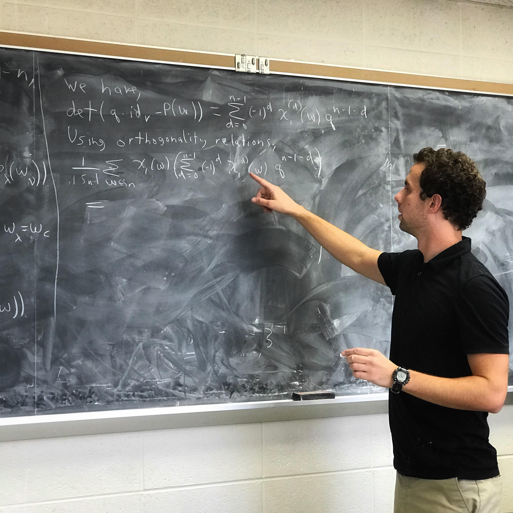

About Me
I am a Szego Assistant Professor in Mathematics at Stanford University, working with Professor Daniel Bump. I got my Ph.D. in 2022 at the University of Minnesota, working with Professor Ben Brubaker. My primary research interest is in algebraic and combinatorial structures in representation theory, involving objects such as quantum groups, Hecke algebras, and Heisenberg algebras, along with applications to Schubert calculus, reductive p-adic groups, and (non)symmetric functions.
For the most up-to-date list of my papers and preprints, see here.
I support inclusivity in mathematics. Here is a letter my department sent to the Minnesota Attorney General opposing an in-progress rule change that will make it more difficult for international students to study in the US, and here is a letter sent by the AMS and many other major science organizations in the US advocating that Congress allow international STEM PhDs to stay in the US after graduation (I played no part in writing the latter letter).